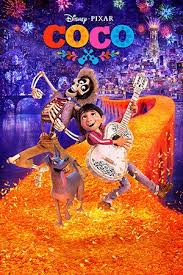

Birthdate: July 15, 2004
Nationality: American
Awards: Annie Award
Known For: Coco
Note: Was twelve years old during recording and had to grow with the character over several years of production
Birthdate: November 30, 1978
Nationality: Mexican
Awards: Golden Globe (Mozart in the Jungle)
Known For: Amores Perros, Y Tu Mama Tambien, Babel
Note: Cast specifically because Pixar wanted authentic Mexican voices for the lead roles
Birthdate: October 3, 1975
Nationality: American
Known For: Legally Blonde, Meet the Fockers
Note: Her character's matriarchal authority was partly modeled on interviews with Mexican families
Birthdate: December 16, 1963
Nationality: American
Known For: Miss Congeniality, Traffic, Law and Order
Note: His character's voice and visual design were inspired by classic Mexican cinema's golden era
Note: The Xoloitzcuintli dog breed used for Dante was chosen for its genuine historical significance in Aztec and Mexican culture